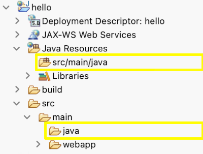

Cosa sono
Sono applicazioni che forniscono contenuti via HTTP... detto così sembrano molto simili ad Apache httpd e in effetti per alcuni parametri lo sono ma se httpd è pensato per fornire ai client dei file presenti su disco (è poi vero che esistono tantissime estensioni che ad esempio gli permettono di eseguire script PHP) un application server è pensato per eseguire applicazioni che genereranno un qualche tipo di output che viene fornito al client.
Questi server offrono un elevato numero di comode funzioni per poter scrivere e mantenere facilmente applicazioni lato server anche di grandi dimensioni, in questa breve introduzione daremo uno sguardo a quei server che ci permettono di scrivere i programmi in Java. Ne esistono diversi tipi che offrono diverse categorie di servizi (ad esempio autenticare gli utenti o la gestione delle transazioni), noi prendiamo in considerazione il profilo web (quello di base) che va bene per muovere i primi passi.
 Tomcat
Tomcat
Tomcat necessita di pochissima configurazione e seguendo linee standard può essere sotituito da altri programmi con le sue stesse funzioni in pratica a costo zero, GlassFish è un esempio di alternativa.
Una volta scaricato il pacchetto (.zip va bene per Windows, megio .tar.gz per Linux o macOS)
basta scompattarlo e fare un minimo di configurazione.
Per poter partire Tomcat ha bisogno di sapere dove si trova Java: se il sistema operativo
ha già configurata la variabile d'ambiente JAVA_HOME non serve fare nulla
altrimenti lo possiamo indicare utilizzando una variabile di ambiente chiamata JAVA_HOME
nel file setenv.sh (o setenv.bat per Windows) che deve trovarsi sempre nella cartella bin,
il file conterrà semplicemente una riga:
JAVA_HOME=/percorso/cartella/jdk-21
Per avviare il server bisogna lanciare il programma
startup.bat in Windows o startup.sh su Linux o macOS
che si trova nella cartella bin. Per fermare il server usare
shutdown.sh. Anche se il comando per avviare/fermare Tocat
termina questo non vuol dire che il server non sia partito, per
provarlo basta collegarsi all'indirizzo http://localhost:8080.
Hello World!
Come esempio creiamo un oggetto che si chiama "Servlet" che è in grado di rispondere sia a richieste di tipo GET che POST, seguiamo un procedimento che richiede meno strumenti e impostazioni possibile.
 Usiamo Eclipse, fa comodo avere la versione Enterprise Java ( dalla pagina dei download). Creiamo un nuovo progetto: click sul menu File>New...>Project..., dalla finestra di disalogo che si apre dal gruppo web selezionare Dynamic Web Project, basta mettere "hello" come nome del progetto e lasciare le impostazioni di default.
Nella vista "Project Explorer" (l'immagine qui a fianco) di Eclipse i sorgenti java compaiono in entrambe le due cartelle evidenziatge in giallo, si possono usare indifferentemente.
L'applicazione di esempio risponde con due diversi messaggi a seconda che
venga chiamata con il metodo GET o POST, per fare questo basta creare una classe
che chiamiamo HelloWorld (in qualsiasi pacchetto):
HelloWorld.java
package it.esempi;
import java.io.IOException;
import java.io.Writer;
import jakarta.servlet.annotation.WebServlet;
import jakarta.servlet.http.HttpServlet;
import jakarta.servlet.http.HttpServletRequest;
import jakarta.servlet.http.HttpServletResponse;
@WebServlet("/saluto")
public class HelloWorld extends HttpServlet {
private static final long serialVersionUID = 1L;
protected void doGet(HttpServletRequest request, HttpServletResponse response) throws IOException{
Writer uscita = response.getWriter();
uscita.append("richiesta GET");
}
protected void doPost(HttpServletRequest request, HttpServletResponse response) throws IOException {
response.setContentType("text/html");
response.getWriter().append("richiesta POST");
}
}
Se abbiamo fatto tutto in ordine dovremmo avere tantissimi errori nella classe...
questo perché stiamo utilizzando degli oggetti che non sono presenti
nella libreria base di Java. In eclipse correggere il problema non è difficile:
basta aprire le proprietà del progetto, andare nella sezione "Java build path"
nella pagina delle librerie. Click sul pulsante "add External Jars"
e aggiungere uno specifico jar che si chiama servlet-api.jar
e si trova nella cartella lib di Tomcat.
Pubblicazione
Pubblicare una applicazione vuol dire renderla disponibile per i client e in pratica tutto sta nel copiare un file in una sottocartella di Tomcat.
Eclipse è un grado di produrre il file che ci serve a partire dal nostro progetto
inserendo tutto quello che serve, in genere potrebbero esserci anche pagine html e diversi
altri tipi di file ma nel nostro caso in pratica ci sarà la classe
HelloWorld compilata e pochissimo altro.
Selezionare il progetto e poi File>Export..., dal dialogo che si apre selezionare
WAR file dal gruppo Web. Va selezionata la cartella di destinazione
e lasciato tutto il resto come è di default, alla fine si otterrà un file
hello.war.
Il file war appena creato va copiato nella cartella webapps
di Tomcat che va poi avviato.
Test
Per provare (almeno il metodo GET) basta usare un browser: nella barra delle
URL l'indirizzo da scrivere è http://localhost:8080/hello/saluto
come si vede nella URL "hello" è il nome del progetto e "saluto" è il percorso
indicato usando l'annotazione @WebServlet nella creazione della classe.